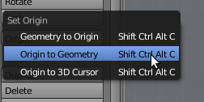
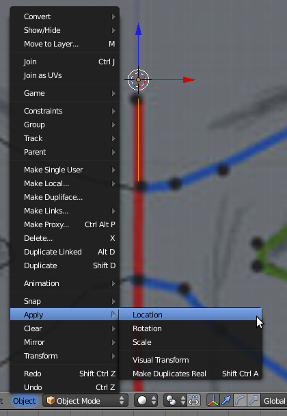
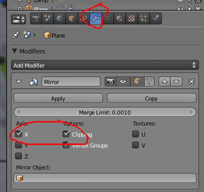

Blender – Modelar uma cara
Descarregue aqui ficheiros de apoio a este texto
1- Recolha as imagens que acompanham este tutorial. Se preferir, pode dividir a imagem, criando uma imagem independente para a visão frontal e outra para a visão lateral.
2- Apague o cubo. Divida a área de trabalho, coloque uma das áreas em visão forntal e a outra em lateral. Insira as imagens no fundo da sua área de trabalho.

3- Adicione um plano. Apague dois vértices de modo a ficar só com uma linha na vertical com dois vértices. Posicione esses dois vértices em cima dos dois primeiros pontos da linha vermelha.

4- Como já deve ter reparado, a origem do objecto está deslocada em relação à linha que tem neste momento. Em Object Mode, seleccione a linha com dois vértices e clique no botão Origin e em Origin to Geometry. Ainda em Object Mode, vá ao menu Object > Apply e utilize a função Apply Location. Repita o processo para Apply Rotation e Apply Scale.
 5- Na visão frontal, seleccione o vértice inferior e faça Extrude para adicionar novos pontos e completar a linha vermelha. Para manter os pontos da linha vermelha alinhados, bloqueie o eixo Z sempre que fizer Extrude.
6- Vá alinhado o vértices na visão lateral. Os pontos do plano frontal e lateral não são exactamente coincidentes, não se preocupe se ficarem ligeiramente desalinhados.
7- Quando tiver todos os pontos criados, seleccione 4 vértices de cada vez e crie uma face (F). Repita o processo até ter metade da cara.
8- Depois de ter criado um lado da cara, passe para Object Mode e utilize o Modifier Mirror (atenção: o “espelhamento” é feito em função da Origin do objecto!). Se estiver tudo bem, torne a aplicação do Modifier definitiva com o Apply (as duas malhas – a original e a do espelho – tornam-se parte do mesmo objecto).
9- No final, pode experimentar aplicar o Modifier Subdivison Surface.